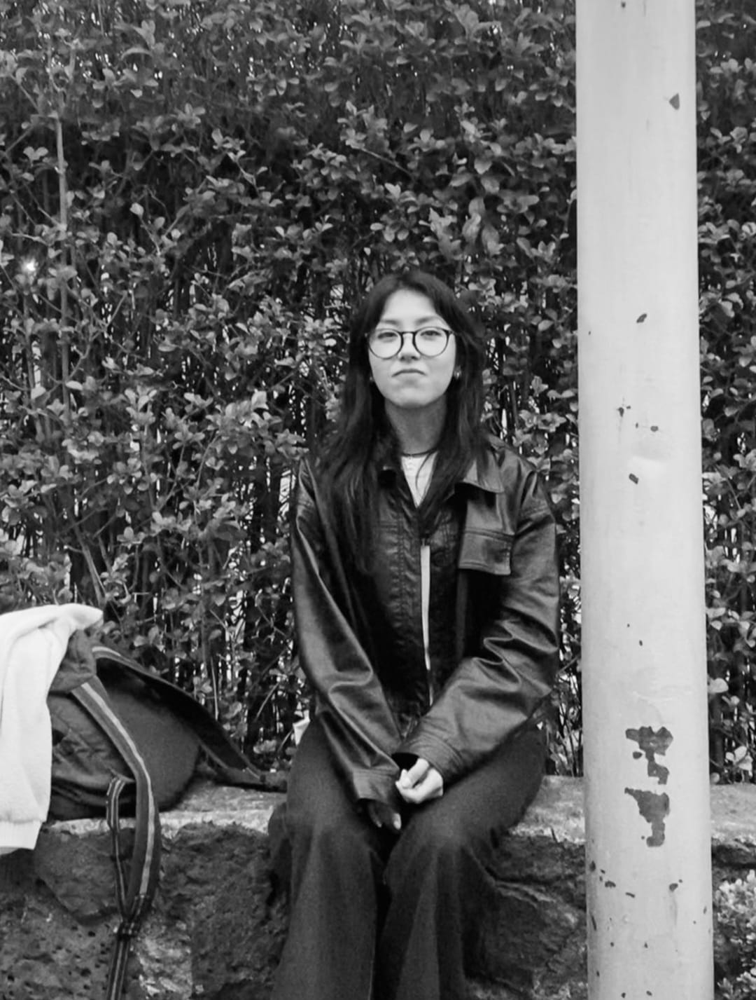
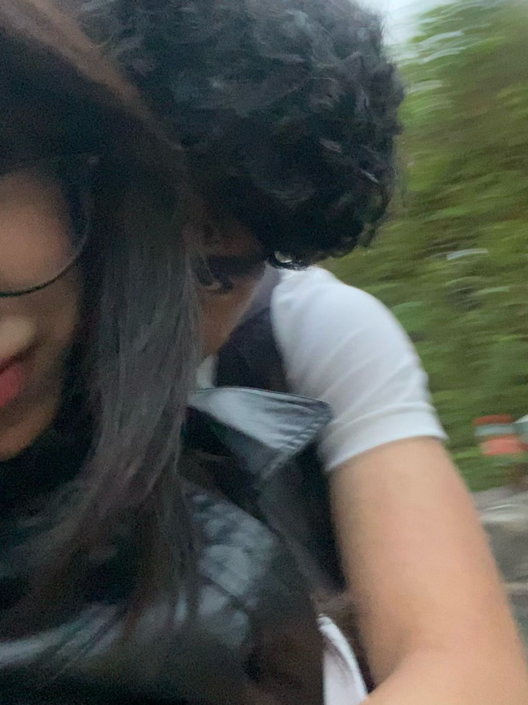
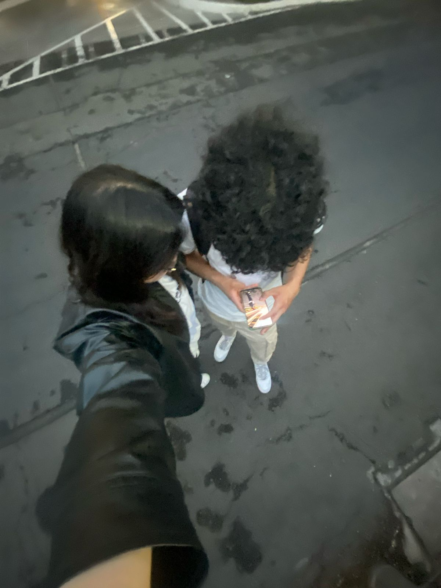
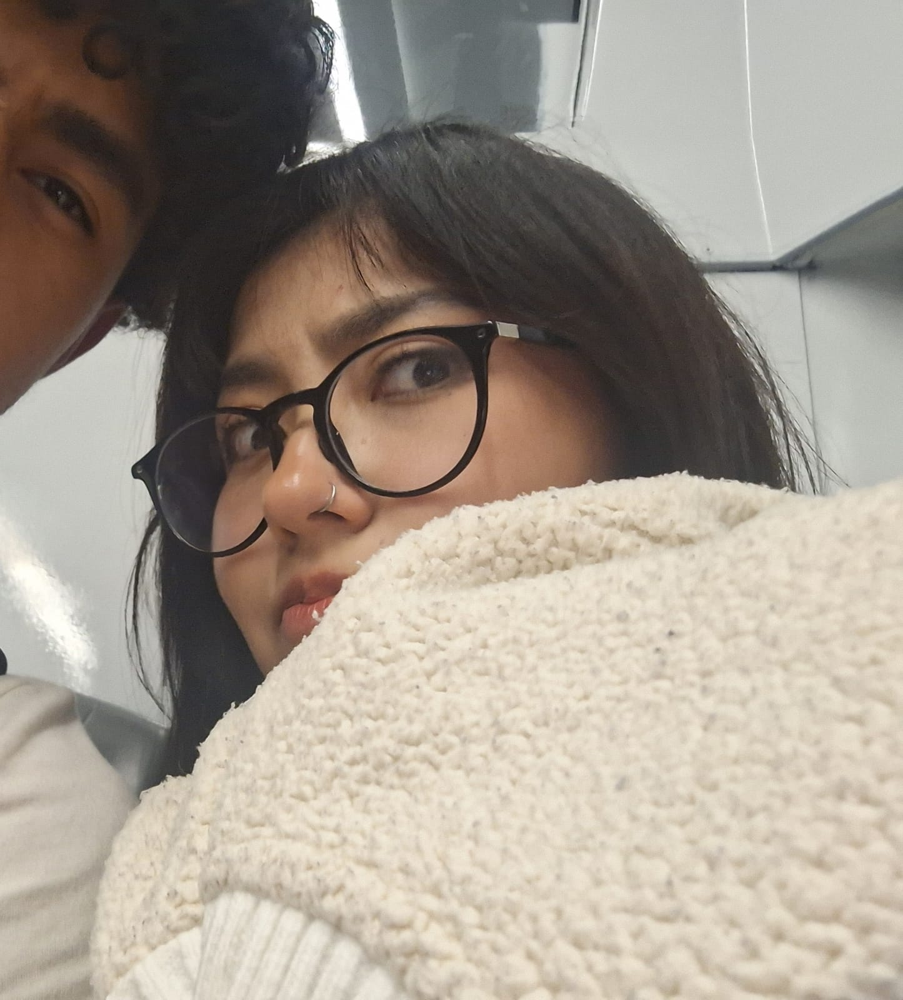

Y esa caritaaa?
Esta página es para ese día, quizás no lo recuerdes como tan especial, pero yo lo recuerdo como un gran avance, nuestras primeritas saliditas a perisur y te quise hacer la sesión de fotos y esta fue la primera, salías asi como de uuush eeh, como enojadita jaja y uno que te queria tomar fotos, pero en fiiiin

Selfiee
Por algo de lo que recuerdo este día es por esta foto, ya estábamos conectando mucho y ya nos hacíamos fotos así, recuerdo como cuando volví a cch les enseñaba esa foto como en señal de progreso y me decian uyyyy

Más fotitoos
Es que estoy bastante seguro de que estas empezaban a ser nuestras primeras fotos juntos, selfies, fotos al otro, que bonito

Laaaaa claaasica
A mi me gustaba mucho esta foto pero no me dejabas subirlaaaaaa, al menos pude después dibujarla
Una variante
Esta foto igual me gusta mucho y taaaaaampooooco me dejabas subirla o ponermela de foto de perfil, así es la gente pelada